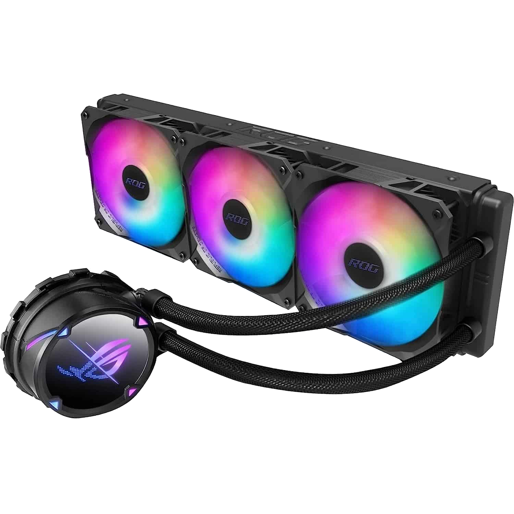

Dzesētājs ir komponents, kas tiek izmantots, lai novērstu datora komponentu (procesora, grafikas kartes, mātesplates utt.) pārkaršanu, saglabājot to optimālā darba temperatūrā. Efektīva dzesēšana ir svarīga, lai novērstu bojājumus un nodrošinātu datora stabilu darbību.
Galvenie dzesētāju veidi:
Gaisa dzesētāji (Air Coolers):
Pārskats: Tas ir visbiežāk sastopamais dzesēšanas veids, kur tiek izmantoti siltuma caurules un ventilatori, lai izkliedētu siltumu.
Komponenti: Siltuma caurules (Heat Pipes), radiatora plāksne un ventilators.
Priekšrocības:
Vienkārši uzstādīt.
Lētāki nekā ūdens dzesētāji.
Nav nepieciešama uzturēšana.
Trūkumi:
Lielāka izmēra (dažreiz var traucēt citus komponentus, piemēram, RAM).
Samērā skaļi, īpaši pie augstām slodzēm.

Ūdens dzesētāji (Liquid Coolers / AIO - All-in-One):
Pārskats: Šie dzesētāji izmanto šķidrumu, lai pārvadītu siltumu no procesora uz radiatoru, kuru dzesē ar ventilatoriem.
Komponenti: Radiators, sūknis, caurules un šķidrums.
Priekšrocības:
Efektīvāk novērš pārkaršanu, īpaši augstas veiktspējas procesoriem.
Mazāki un kompakti, kas palīdz ietaupīt vietu.
Samazina trokšņa līmeni salīdzinājumā ar lieliem gaisa dzesētājiem.
Trūkumi
Dārgāki nekā gaisa dzesētāji.
Prasa papildu apkope (piemēram, antifrīzs vai ūdens maiņa).
Ja tiek bojāts, var rasties noplūdes.
Pusūdens dzesētāji (Hybrid Coolers):
Pārskats: Apvieno gan gaisa, gan ūdens dzesēšanas elementus, piedāvājot labāku veiktspēju nekā tīri gaisa dzesētāji.
Priekšrocības:
Augstāka dzesēšanas jauda nekā tikai gaisa dzesētājiem.
Kompaktāki nekā pilnīgi ūdens dzesētāji.
Trūkumi:
Dārgāki un sarežģītāki nekā tikai gaisa dzesētāji.
Kā izvēlēties dzesētāju?
Komponentu saderība:
Pārbaudi, vai dzesētājs ir saderīgs ar Tavu procesoru un mātesplati. Daži dzesētāji var būt pārāk lieli vai nepiemēroti konkrētam CPU socket tipam.
Temperatūru kontrole:
Ja Tev ir augstas veiktspējas procesors vai grafikas karte, piemēram, spēlēm vai video rediģēšanai, būs nepieciešams efektīvāks dzesētājs, piemēram, ūdens dzesētājs.
Korpusa lielums:
Uztver datora korpusa ierobežojumus. Daži dzesētāji var būt pārāk lieli vai pat neiederēties mazākos korpusos.
Troksnis:
Ja Tev ir svarīga klusāka sistēma, Ūdens dzesētāji un augstas kvalitātes gaisa dzesētāji ar lieliem, lēnākem rotējošiem ventilatoriem nodrošinās mazāku troksni.
Budžets:
Gaisa dzesētāji ir lētāki un vieglāk uzstādāmi, bet ūdens dzesētāji nodrošina augstāku veiktspēju un ir dārgāki.
Populārie dzesētāju ražotāji:
Noctua – labi pazīstami ar ļoti klusiem un efektīviem gaisa dzesētājiem.
Corsair – ražo gan AIO (ūdens dzesētājus), gan gaisa dzesētājus.
NZXT – piedāvā dažādus AIO dzesētājus, kas ir stilīgi un efektīvi.
be quiet! – piedāvā ļoti klusas dzesēšanas sistēmas.
Izvēloties dzesētāju, ņem vērā gan datora komponentu jaudu, gan vietu, gan budžetu, lai atrastu vispiemērotāko risinājumu, kas nodrošinās optimālu dzesēšanu un ilgmūžību.